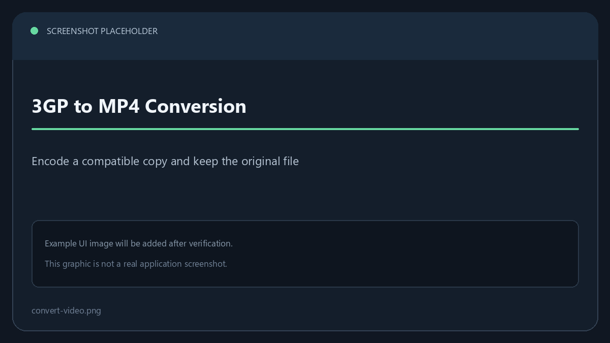

Video conversion
Convert a 3GP clip to a widely supported MP4 copy when your FreeMoCap version needs it—without risking your original.
Keep the original. If FreeMoCap can read your phone's original video, skip conversion. Re-encoding can reduce quality; it cannot recover detail lost to low resolution or compression.
Convert 3GP to MP4
First install FFmpeg and add it to PATH. Open Command Prompt (press Windows + R, enter cmd, and press Enter). Replace the sample folder and file names with your own.
ffmpeg -i "C:\Users\YourName\Downloads\Your-File-Name.3gp" -c:v libx264 -preset medium -crf 18 -pix_fmt yuv420p -c:a aac "C:\Users\YourName\Downloads\Your-File-Name_FreeMoCap.mp4"FFmpeg reads the 3GP input and writes a new H.264 video with AAC audio in an MP4 container. -crf 18 is a quality/size setting: a lower CRF usually means higher quality and a larger file. You can use a different CRF to adjust size, but do not treat it as a way to restore source detail.

Check the output
After conversion completes, inspect the output with FFmpeg:
ffmpeg -i "C:\Users\YourName\Downloads\Your-File-Name_FreeMoCap.mp4"Confirm that the file exists, plays correctly, and has the expected duration. If the original has no audio stream, remove the audio options and encode video only:
ffmpeg -i "C:\Videos\walk.3gp" -c:v libx264 -preset medium -crf 18 -pix_fmt yuv420p -an "C:\Videos\walk.mp4"Common issues
“ffmpeg” is not recognized
Close and reopen the terminal. Check that the folder containing ffmpeg.exe is on PATH. See PATH setup.
FFmpeg cannot open the source file
Check that the path is correct, the phone transfer completed, and paths with spaces are in quotes. Keep the original file in place.
The output is too large or appears different
Re-encoding changes compression and can change file size. Use the original when supported and do not convert the same clip repeatedly.
Next step
Continue to calibration if your capture setup requires it, then read the iPhone recording guide.